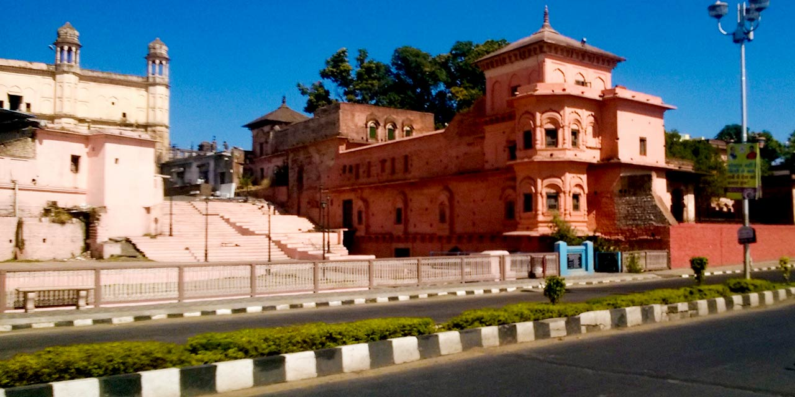
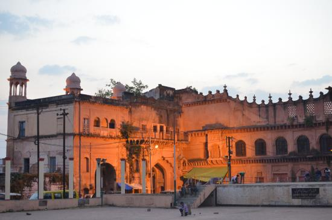
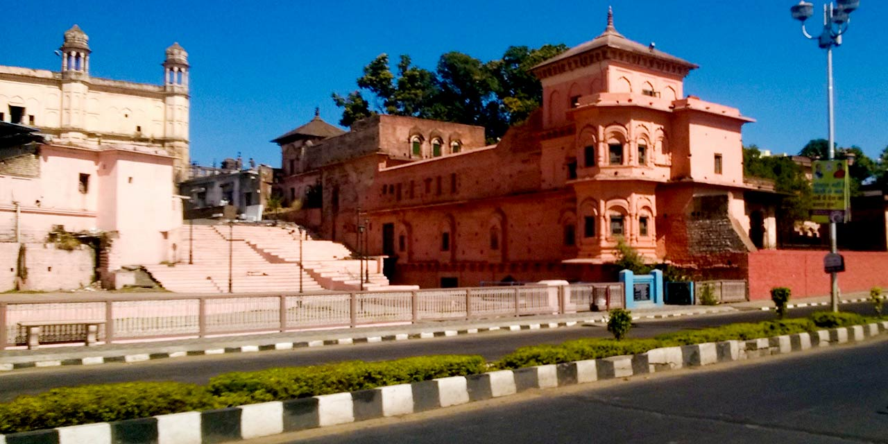
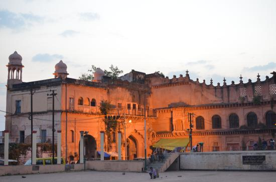
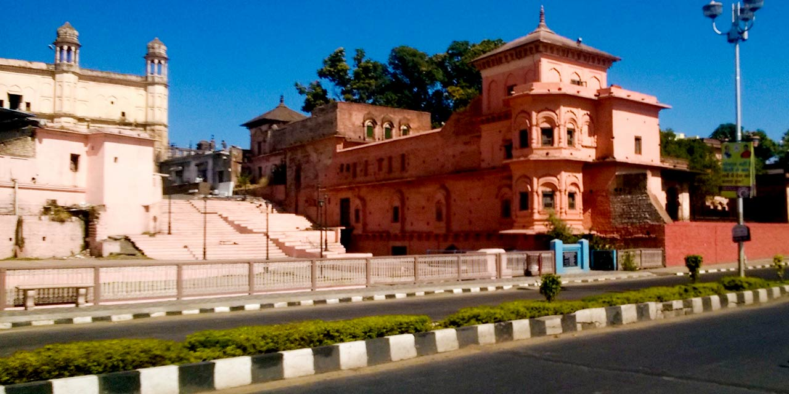
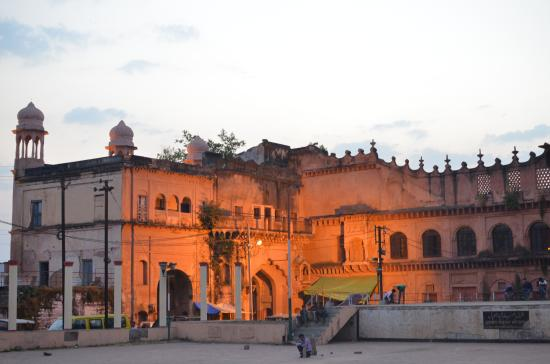

The Taj-ul-Masajid (Arabic: تَاجُ ٱلْمَسَاجِد, romanized: Tāj-ul-Masājid, lit. 'Crown of the Mosques') or Tāj-ul-Masjid (تَاجُ ٱلْمَسْجِد), is a mosque situated in Bhopal, India. It is the largest mosque in India and one of the largest mosques in Asia.
The construction work of this mosque started in the reign of the Mughal Emperor Bahadur Shah Zafar by Nawab Shah Jahan Begum (1844–1860 and 1868–1901) of Bhopal (Wife of Nawab Syed Siddiq Hasan Khan) and continued to be built by her daughter Sultan Jahan Begum, till her lifetime. The mosque was not completed due to lack of funds, and after a long lay-off after the War of 1857, construction was resumed in 1971 by Allama Mohammad Imran Khan Nadwi Azhari and Maulana Sayed Hashmat Ali Sahab of Bhopal. The construction was completed by 1985 and the entrance (eastern) gate was renovated grandly using ancient motifs from circa 1250 Syrian mosques by the contribution of the Emir of Kuwait to commemorate the memory of his departed wife.
Built at the summit of Arera hills is the Lakshmi Narayan Temple, structured with grandiose scale and design. The temple is more commonly known as Birla Mandir. It's an awe-inspiring spectacle that showcases a panoramic view of the historic city of Bhopal. The temple was built in the honour of Lakshmi, the deity of wealth and her consort Vishnu (also known by the name Narayan), the preserver of the universe. Hence the name Lakshmi Narayan.
The Simha Gate of the temple features an old manuscript carved on stone, interestingly the language in which it is written is still to be deciphered. It is said to be the Sadhana Sthali of Oswal Dynasty. On the event of Kartik Purnima, a big fare is held in the temple every year.
More than 200 years old it was built by the first woman ruler of Bhopal, Qudsia Begum (reigned 1819-1837), who was nicknamed ‘Gauhar’. The palace, which was residential as well as a working place for the Begum, is known for its Indo-Islamic architecture. It is unique among the contemporary palatial structures in other parts of the country in the sense that it has no separate designated parts for women and men (mardana and zanana) since the ruler herself was a woman


Babe Sikandari Darwajala an attractive gate used by royal females buillt in 1840.
Taj Mahal is a palace built by Sultan Shah Jahan, Begum of Bhopal. It is located beside the Taj-ul-Masajid in Bhopal, India.
These two royal buildings are situated at the entrance to the Chowk area in the heart of the walled city. Shaukat Mahal is a 19th century palace which was designed by a Frenchman, said to be a descendent the Bourbon kings. It combines Indo-Saracenic and Rococo architectural styles. Sadar Manzil or the Hall of Public Audience of the former rulers of Bhopal, is located nearby, and now houses government offices.